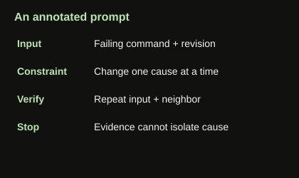

Prompts you can verify
Use a filled example first. Replace its inputs and acceptance criteria for your next task.
Prompt library
Copy a template, replace each bracketed field, then keep the verification and stop rules. The examples use the invoice lab, sensor badge lab, and support queue lab.
Orient a repository
Map a codebase before edits.
Reusable template
- Purpose
- Map a codebase before edits.
- Inputs
- Repository tree, README, entry points, tests, package files.
- Constraints
- Do not edit files. Separate observed facts from guesses.
- Output
- A short map of components, run commands, risks, and next file to inspect.
- Verification
- Check each path and command in the repository. Mark absent evidence.
- Stop
- Stop after the map or when a missing dependency blocks inspection.
Purpose: Map a codebase before edits.
Inputs: Repository tree, README, entry points, tests, package files.
Constraints: Do not edit files. Separate observed facts from guesses.
Output: A short map of components, run commands, risks, and next file to inspect.
Verification: Check each path and command in the repository. Mark absent evidence.
Stop: Stop after the map or when a missing dependency blocks inspection.Filled example
- Purpose
- Inspect this repository for an invoice total defect.
- Inputs
- Tree: labs/service. Entry: service.py. Tests: test_service.py.
- Constraints
- Do not change code. Use only files present in this checkout.
- Output
- Map the invoice function, current rounding rule, tests, and smallest useful inspection path.
- Verification
- Verify paths against the tree and compare claims with source.
- Stop
- Stop before proposing edits if the contract is unclear.
Failure and repair. A vague map names folders without showing the path from API to test. Repair it by citing the function and test names.
Write acceptance criteria
Turn a request into checks before implementation.
Reusable template
- Purpose
- Turn a request into checks before implementation.
- Inputs
- Request, current behavior, domain rules, supported inputs.
- Constraints
- Make rules measurable. List invalid inputs and compatibility needs.
- Output
- Acceptance table with case, input, expected result, and rationale.
- Verification
- Trace every expected result to a stated rule. Flag open questions.
- Stop
- Stop when each rule has a check or a named unresolved question.
Purpose: Turn a request into checks before implementation.
Inputs: Request, current behavior, domain rules, supported inputs.
Constraints: Make rules measurable. List invalid inputs and compatibility needs.
Output: Acceptance table with case, input, expected result, and rationale.
Verification: Trace every expected result to a stated rule. Flag open questions.
Stop: Stop when each rule has a check or a named unresolved question.Filled example
- Purpose
- Add an optional discount in cents to the invoice service.
- Inputs
- Subtotal 300 cents, discount 100, tax 8.25 percent. Existing one-argument calls must work. Tax rounds up at half a cent. Reject negatives, fractions, and Booleans.
- Constraints
- Preserve the API. Deduct discount before tax. Cap taxable cents at zero. Use exact integer arithmetic.
- Output
- Checks: 200 taxable cents returns 217 total cents; equal discount returns zero; omitted discount matches old call; invalid values fail.
- Verification
- Calculate tax as 16.5 cents, rounded to 17. Check large values without floats.
- Stop
- Stop if discount range or error type is unspecified.
Failure and repair. Failure: “handle edge cases” is not testable. Repair with exact inputs, outputs, and rejection behavior.
Choose a small design
Select a design that meets the contract with few moving parts.
Reusable template
- Purpose
- Select a design that meets the contract with few moving parts.
- Inputs
- Acceptance criteria, current modules, runtime limits, interfaces.
- Constraints
- Keep public interfaces stable unless required. Compare at least two options.
- Output
- Decision record with choice, rejected option, data flow, and risks.
- Verification
- Check that every acceptance case has a path through the design.
- Stop
- Stop when one design meets all checks or a missing constraint decides the choice.
Purpose: Select a design that meets the contract with few moving parts.
Inputs: Acceptance criteria, current modules, runtime limits, interfaces.
Constraints: Keep public interfaces stable unless required. Compare at least two options.
Output: Decision record with choice, rejected option, data flow, and risks.
Verification: Check that every acceptance case has a path through the design.
Stop: Stop when one design meets all checks or a missing constraint decides the choice.Filled example
- Purpose
- Plan the invoice discount change.
- Inputs
- The service is one function. Existing calls pass only subtotal. Eight tests cover rounding, big values, and invalid inputs.
- Constraints
- Do not add a dependency, class, or new public type.
- Output
- Keep one function. Add optional discount_cents=0. Validate both integer inputs, cap taxable amount, then compute tax with integer arithmetic.
- Verification
- Trace omitted discount, equal discount, and 10²⁰-plus subtotal through the proposed steps.
- Stop
- Stop if the required exception contract is absent.
Failure and repair. Failure: adding a pricing framework for one optional argument increases risk. Repair by selecting the smallest design that satisfies checks.
Implement a bounded change
Make a focused code change and report evidence.
Reusable template
- Purpose
- Make a focused code change and report evidence.
- Inputs
- Files, accepted criteria, allowed scope, run commands.
- Constraints
- Edit only named files. Do not weaken checks or alter unrelated behavior.
- Output
- Patch summary, changed files, commands, outcomes, remaining risks.
- Verification
- Run relevant checks and inspect the diff for scope and exact arithmetic.
- Stop
- Stop on a failing check, missing tool, or scope expansion.
Purpose: Make a focused code change and report evidence.
Inputs: Files, accepted criteria, allowed scope, run commands.
Constraints: Edit only named files. Do not weaken checks or alter unrelated behavior.
Output: Patch summary, changed files, commands, outcomes, remaining risks.
Verification: Run relevant checks and inspect the diff for scope and exact arithmetic.
Stop: Stop on a failing check, missing tool, or scope expansion.Filled example
- Purpose
- Fix invoice tax rounding and add the optional discount.
- Inputs
- service.py and test_service.py. 200 cents at 8.25 percent must return 217.
- Constraints
- Keep one-argument calls valid. Use cents as integers. Reject bool despite bool being an int subtype.
- Output
- Update the function and tests for discount before tax, zero taxable amount, and exact half-cent rounding.
- Verification
- Run the service tests. Confirm the 10²⁰-plus case and inspect the diff.
- Stop
- Stop if a required test fails or the change needs another module.
Failure and repair. Failure: changing expected values to pass a broken implementation hides the defect. Repair by preserving independent expected results.
Debug from evidence
Find the smallest cause that explains a failure.


Reusable template
- Purpose
- Find the smallest cause that explains a failure.
- Inputs
- Failing command, input, output, source revision, expected rule.
- Constraints
- Do not guess from the error label. Change one cause at a time.
- Output
- Reproduction, cause, minimal repair, regression check, uncertainty.
- Verification
- Re-run the same input and one neighboring case.
- Stop
- Stop when evidence does not isolate one cause. Ask for the missing artifact.
Purpose: Find the smallest cause that explains a failure.
Inputs: Failing command, input, output, source revision, expected rule.
Constraints: Do not guess from the error label. Change one cause at a time.
Output: Reproduction, cause, minimal repair, regression check, uncertainty.
Verification: Re-run the same input and one neighboring case.
Stop: Stop when evidence does not isolate one cause. Ask for the missing artifact.Filled example
- Purpose
- Explain why the invoice returns 216 instead of 217 cents.
- Inputs
- Subtotal 200 cents, tax rate 8.25 percent. Current code converts tax to int. Expected half-cent rounds up.
- Constraints
- Use the supplied function and reproduce first. Do not change the rule.
- Output
- Trace 200 × 8.25 / 100. Identify truncation of 16.5 to 16. Replace float conversion with exact integer rounding.
- Verification
- Check 200 cents gives 217 and a non-half-cent case remains correct.
- Stop
- Stop if the input or rule differs from the reported case.
Failure and repair. Failure: “floating point is bad” does not prove the cause. Repair by showing the intermediate value and result.
Design tests from rules
Turn each rule into a test that can fail for the right reason.
Reusable template
- Purpose
- Turn each rule into a test that can fail for the right reason.
- Inputs
- Acceptance rules, current tests, boundaries, failure history.
- Constraints
- Include boundary and invalid cases. Avoid copying implementation logic.
- Output
- Test matrix and a small set of highest-value examples.
- Verification
- Check expected values independently and ensure each test distinguishes a plausible bug.
- Stop
- Stop when every stated rule has coverage or a gap is explicit.
Purpose: Turn each rule into a test that can fail for the right reason.
Inputs: Acceptance rules, current tests, boundaries, failure history.
Constraints: Include boundary and invalid cases. Avoid copying implementation logic.
Output: Test matrix and a small set of highest-value examples.
Verification: Check expected values independently and ensure each test distinguishes a plausible bug.
Stop: Stop when every stated rule has coverage or a gap is explicit.Filled example
- Purpose
- Test invoice discount and rounding.
- Inputs
- Discount comes before tax. Tax rounds up at half-cent. Taxable base cannot go below zero.
- Constraints
- Test public behavior. Do not call private helpers or compute expected values with the same formula.
- Output
- Cases: omitted discount; 300 less 100 gives 217; discount equals subtotal gives 0; half-cent rounds up; huge amount exact; reject -1, 1.5, True.
- Verification
- Manually derive 200 cents × 825 / 10000 = 16.5 cents, then 17.
- Stop
- Stop if a rule has no expected output.
Failure and repair. Failure: only testing a typical subtotal misses truncation and bool acceptance. Repair with boundary and type cases.
Review a change for defects
Review a patch against behavior, risk, and evidence.
Reusable template
- Purpose
- Review a patch against behavior, risk, and evidence.
- Inputs
- Diff, specification, tests, runtime context.
- Constraints
- Do not rewrite for style unless style hides a defect. Cite line or behavior.
- Output
- Findings by severity, evidence, impact, and fix. State checks not run.
- Verification
- Confirm each finding from the diff and a reproducible case.
- Stop
- Stop after reviewing changed paths and relevant callers.
Purpose: Review a patch against behavior, risk, and evidence.
Inputs: Diff, specification, tests, runtime context.
Constraints: Do not rewrite for style unless style hides a defect. Cite line or behavior.
Output: Findings by severity, evidence, impact, and fix. State checks not run.
Verification: Confirm each finding from the diff and a reproducible case.
Stop: Stop after reviewing changed paths and relevant callers.Filled example
- Purpose
- Review a patch that adds invoice discounts.
- Inputs
- Spec: exact cents, optional discount, deduction before tax, nonnegative base. Diff and test output are attached.
- Constraints
- Treat tests as evidence, not proof. Do not infer unseen files.
- Output
- Check compatibility, validation including bool, rounding, large values, and test independence. Report only actionable findings.
- Verification
- Recompute the 200-cent case and inspect whether tests catch float truncation.
- Stop
- Stop if the diff or acceptance rules are missing.
Failure and repair. Failure: approving because tests pass ignores untested contracts. Repair by checking each contract rule against code and tests.
Synthesize research evidence
Summarize claims with source, method, limits, and conflict.
Reusable template
- Purpose
- Summarize claims with source, method, limits, and conflict.
- Inputs
- Papers, reports, dates, question, inclusion rules.
- Constraints
- Do not invent results. Separate source claims from inference.
- Output
- Evidence table, agreement, disagreement, limits, missing data.
- Verification
- Trace each number and quotation to its source.
- Stop
- Stop when sources do not support a conclusion. Mark Not in source.
Purpose: Summarize claims with source, method, limits, and conflict.
Inputs: Papers, reports, dates, question, inclusion rules.
Constraints: Do not invent results. Separate source claims from inference.
Output: Evidence table, agreement, disagreement, limits, missing data.
Verification: Trace each number and quotation to its source.
Stop: Stop when sources do not support a conclusion. Mark Not in source.Filled example
- Purpose
- Summarize the sensor badge shift lab.
- Inputs
- Three seeds: full rule ordinary 290/300, shifted 86/300. Sensor-only: ordinary 251/300, shifted 249/300. Badge matches labels at 0.96 normally and 0.12 after shift.
- Constraints
- Use only these lab records. Do not generalize to real systems.
- Output
- Explain how the badge signal changes, compare both methods by split, and state what the three seeds do not establish.
- Verification
- Recheck totals from the six seed rows and label the data synthetic.
- Stop
- Stop before claiming real-world performance.
Failure and repair. Failure: “the sensor model is robust” overstates these runs. Repair by naming the tested shift and sample limits.
Design a controlled experiment
Plan a comparison that can answer one question.
Reusable template
- Purpose
- Plan a comparison that can answer one question.
- Inputs
- Question, system versions, data, budget, intended use.
- Constraints
- Fix the primary metric and split before runs. Change one factor.
- Output
- Protocol with baseline, unit, split, seeds, metric, budget, stop rule.
- Verification
- Check for leakage, fair comparison, and reproducible records.
- Stop
- Stop before outcome access if the protocol is incomplete.
Purpose: Plan a comparison that can answer one question.
Inputs: Question, system versions, data, budget, intended use.
Constraints: Fix the primary metric and split before runs. Change one factor.
Output: Protocol with baseline, unit, split, seeds, metric, budget, stop rule.
Verification: Check for leakage, fair comparison, and reproducible records.
Stop: Stop before outcome access if the protocol is incomplete.Filled example
- Purpose
- Test whether badge use causes the shifted accuracy drop.
- Inputs
- Use synthetic benchmark, seeds 7, 19, 43; 100 ordinary and 100 shifted test rows per seed.
- Constraints
- Fit threshold on training only. Compare full and sensor-only rules on identical rows.
- Output
- Pre-register accuracy by split and three seed-level comparisons. Save data, predictions, configuration, and errors. Stop after all three seeds or a fixed compute cap.
- Verification
- Verify split isolation, identical test rows, and metric calculation from predictions.
- Stop
- Stop if test labels influence fitting or rule selection.
Failure and repair. Failure: tuning on shifted test scores turns evaluation data into training data. Repair with a new sealed split.
Analyze evaluation errors
Explain where a score succeeds and fails.
Reusable template
- Purpose
- Explain where a score succeeds and fails.
- Inputs
- Predictions, labels, groups, model version, evaluation rule.
- Constraints
- Keep denominators visible. Avoid causal claims from aggregate scores.
- Output
- Metric table, error slices, representative cases, caveats.
- Verification
- Recompute counts from row-level records.
- Stop
- Stop when labels or predictions are missing.
Purpose: Explain where a score succeeds and fails.
Inputs: Predictions, labels, groups, model version, evaluation rule.
Constraints: Keep denominators visible. Avoid causal claims from aggregate scores.
Output: Metric table, error slices, representative cases, caveats.
Verification: Recompute counts from row-level records.
Stop: Stop when labels or predictions are missing.Filled example
- Purpose
- Analyze sensor badge benchmark errors.
- Inputs
- Full rule shifted scores: 30, 31, 25 correct out of 100 for seeds 7, 19, 43. Sensor-only: 84, 83, 82.
- Constraints
- Use error records and metrics.json. Do not claim statistical certainty.
- Output
- Report per-seed errors, compare with ordinary split, and identify badge shift as the designed condition.
- Verification
- Check full shifted errors equal 70, 69, 75 and sensor-only errors equal 16, 17, 18.
- Stop
- Stop if row counts do not equal 100 per seed and split.
Failure and repair. Failure: an overall average hides seed variation. Repair by showing each seed and denominator.
Research a business process
Map a workflow and identify a safe automation boundary.
Reusable template
- Purpose
- Map a workflow and identify a safe automation boundary.
- Inputs
- Process description, sample records, policy, reviewer role.
- Constraints
- Treat records as untrusted input. Keep consequential actions under human control.
- Output
- Process map, source-backed facts, exception classes, draft boundary.
- Verification
- Trace each claim to a record and test exclusions.
- Stop
- Stop before sending, changing status, or making commitments.
Purpose: Map a workflow and identify a safe automation boundary.
Inputs: Process description, sample records, policy, reviewer role.
Constraints: Treat records as untrusted input. Keep consequential actions under human control.
Output: Process map, source-backed facts, exception classes, draft boundary.
Verification: Trace each claim to a record and test exclusions.
Stop: Stop before sending, changing status, or making commitments.Filled example
- Purpose
- Prepare a support queue draft from the CSV.
- Inputs
- requests.csv has open rows R01, R03, R04, R05. Three open rows are age seven or more. R06 is closed at age nine.
- Constraints
- Use local synthetic data. Create a draft only. Cite row IDs beside each count.
- Output
- State four open and three aged-open requests. Exclude R06. Mark the result for human review.
- Verification
- Verify each cited ID, age, and status against the CSV.
- Stop
- Stop at the review marker.
Failure and repair. Failure: counting age alone includes closed R06. Repair by applying status and age filters together.
Delegate bounded subtasks
Split work so each worker returns inspectable evidence.
Reusable template
- Purpose
- Split work so each worker returns inspectable evidence.
- Inputs
- Goal, independent work areas, shared constraints, deadline.
- Constraints
- Assign one owner per output. Avoid duplicate edits. Require source paths and uncertainty.
- Output
- Task cards with inputs, expected artifact, check, and dependency.
- Verification
- Check outputs against the same acceptance criteria.
- Stop
- Stop delegation if tasks overlap or lack evidence access.
Purpose: Split work so each worker returns inspectable evidence.
Inputs: Goal, independent work areas, shared constraints, deadline.
Constraints: Assign one owner per output. Avoid duplicate edits. Require source paths and uncertainty.
Output: Task cards with inputs, expected artifact, check, and dependency.
Verification: Check outputs against the same acceptance criteria.
Stop: Stop delegation if tasks overlap or lack evidence access.Filled example
- Purpose
- Delegate an audit of the support queue report.
- Inputs
- Task A checks CSV counts. Task B checks citations in draft.md. Task C checks restart state and review boundary.
- Constraints
- No worker edits files. Use same CSV and draft. No external delivery.
- Output
- Return three short reports with row IDs or state fields, one issue each if found, and exact evidence.
- Verification
- Merge only claims that cite input rows or checkpoint fields.
- Stop
- Stop if source files differ across workers.
Failure and repair. Failure: “check the report” creates overlap and vague output. Repair with distinct artifacts and a common source snapshot.
Run an independent audit
Challenge a conclusion without inheriting its assumptions.
Reusable template
- Purpose
- Challenge a conclusion without inheriting its assumptions.
- Inputs
- Claim, source artifacts, method, acceptance rules.
- Constraints
- Do not rely on the author’s summary. Recompute key values.
- Output
- Audit table: claim, independent evidence, result, limitation.
- Verification
- Use a separate calculation path and inspect exclusions.
- Stop
- Stop if source artifacts are unavailable.
Purpose: Challenge a conclusion without inheriting its assumptions.
Inputs: Claim, source artifacts, method, acceptance rules.
Constraints: Do not rely on the author’s summary. Recompute key values.
Output: Audit table: claim, independent evidence, result, limitation.
Verification: Use a separate calculation path and inspect exclusions.
Stop: Stop if source artifacts are unavailable.Filled example
- Purpose
- Audit the queue report count.
- Inputs
- Claim: four open requests and three aged-open requests. Source: requests.csv. Draft cites R01, R03, R04, R05 and R04, R01, R05.
- Constraints
- Recompute from source fields. Do not use draft totals as input.
- Output
- List qualifying rows and check the age threshold is inclusive at seven days.
- Verification
- Compare source-derived IDs to both cited sets. Check R06 exclusion.
- Stop
- Stop if CSV content differs from the cited source.
Failure and repair. Failure: copying the draft’s IDs is not independent. Repair by filtering the source from scratch.
Hand off work for recovery
Give the next person enough state to continue safely.
Reusable template
- Purpose
- Give the next person enough state to continue safely.
- Inputs
- Task state, revision, commands, outputs, open risks.
- Constraints
- Do not claim unrun checks. Preserve paths and stop conditions.
- Output
- Handoff with status, evidence, next action, and recovery rule.
- Verification
- Confirm paths exist and the restart condition matches saved state.
- Stop
- Stop at a human review or unresolved failure.
Purpose: Give the next person enough state to continue safely.
Inputs: Task state, revision, commands, outputs, open risks.
Constraints: Do not claim unrun checks. Preserve paths and stop conditions.
Output: Handoff with status, evidence, next action, and recovery rule.
Verification: Confirm paths exist and the restart condition matches saved state.
Stop: Stop at a human review or unresolved failure.Filled example
- Purpose
- Hand off a support report workflow after a write-timeout.
- Inputs
- The workflow writes draft.md, then the process times out before returning. state.json records stage and fingerprint.
- Constraints
- Do not rerun blindly or send the report. Confirm input fingerprint and draft content first.
- Output
- Status: write may have completed. Inspect checkpoint, verify exact draft, then resume to review. If missing or mismatched, retain failure and ask for repair.
- Verification
- Use a restart with the same output path. Confirm unchanged draft and zero extra writes on intact output.
- Stop
- Stop before any external delivery or if fingerprint changed.
Failure and repair. Failure: “retry the command” can duplicate side effects. Repair by checking checkpoint and artifact before retry.